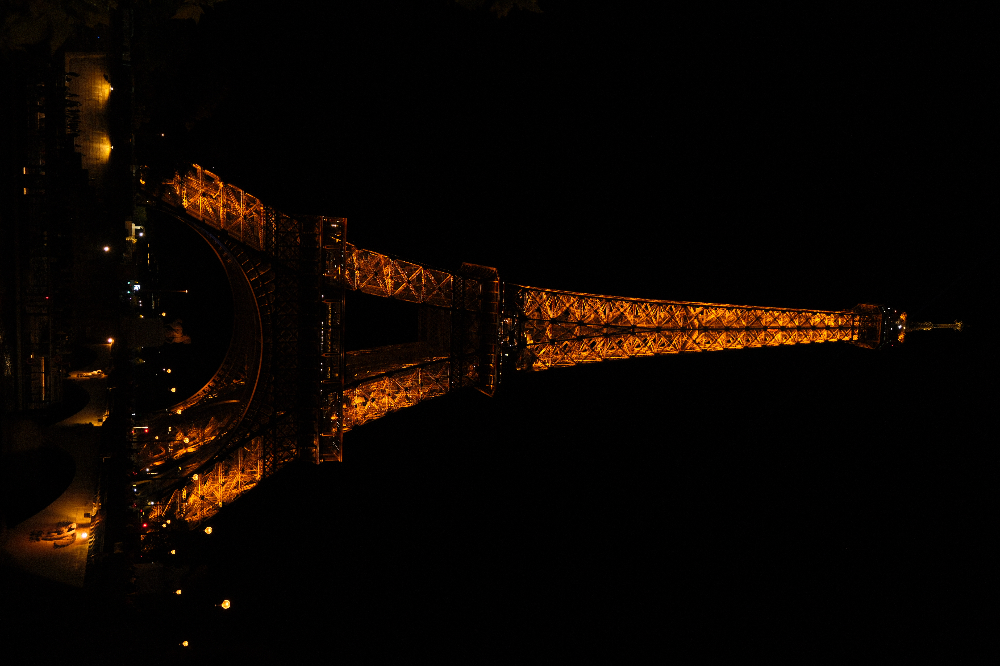
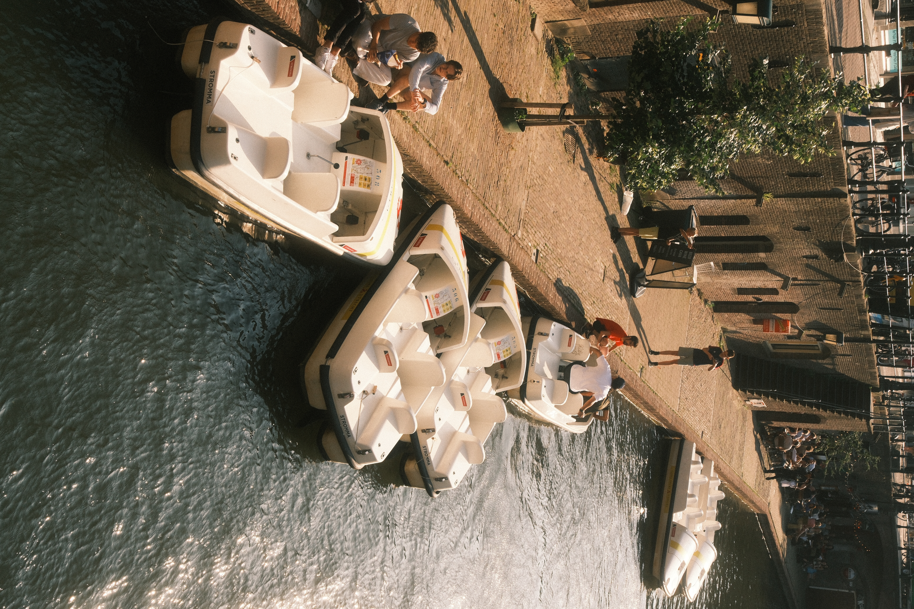
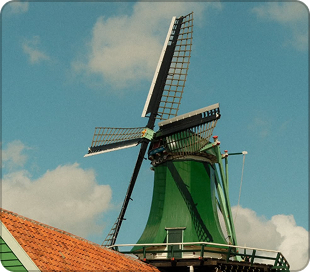
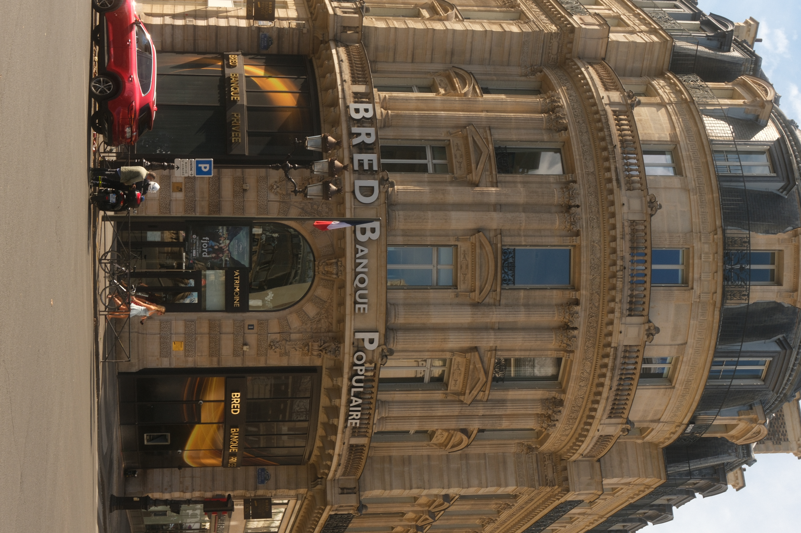
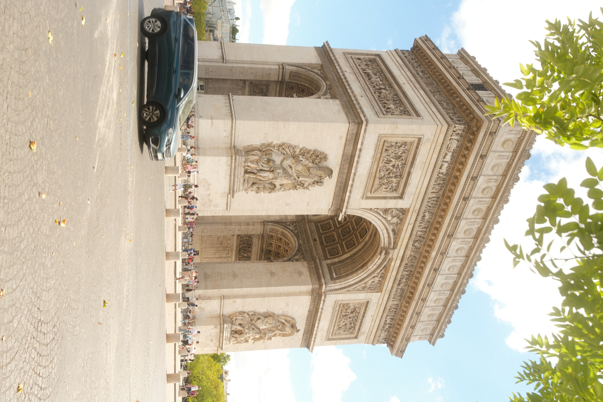

Cinematic Gold

Film Simulation: Classic Negative
Dynamic Range: DR400
Highlight: 0
Shadow: 0
Color: +3
Sharpness: -2
Clarity: -2
Grain Effect: Strong, Small
Color Chrome Effect: Off
Color Chrome FX Blue: Off
White Balance: Daylight
White Balance Shift: +4 Red, -5 Blue
High ISO Noise Reduction: -4
Exposure Compensation: 0 to +1 (adjust based on scene)
Summer Chrome

Film Simulation: Classic Chrome
Dynamic Range: DR400
Highlight: -2
Shadow: -2 (or +4 depending on variation/preference)
Color: +4
Sharpness: 0
Grain Effect: Strong, Large
Color Chrome Effect: Strong
Color Chrome FX Blue: Strong
White Balance: Auto (+5 Red, -6 Blue)
High ISO NR: -4
Clarity: -4 (set to 0 on newer variants like Summer Made)
ISO: Auto (500 to 6400)
Vibrant Arizona

Film Simulation: Classic Chrome
Grain Effect: Weak, Small
Color Chrome Effect: Off
Color Chrome FX Blue: Strong (X-Trans IV) / Weak (X-Trans V)
White Balance: 4350K, +6 Red, -8 Blue
Dynamic Range: DR-P Strong
Color: +4
Sharpness: -2
High ISO NR: -4
Clarity: -3
ISO: Auto, up to 6400
Exposure Compensation: +2/3 to +1 1/3 (typically)
Kodak Gold

Film Simulation: Classic Chrome
Grain Effect: Strong, Small
Color Chrome Effect: Weak
Color Chrome FX Blue: Off
White Balance: Daylight, +4 Red & -5 Blue
Dynamic Range: DR400
Highlight: -1.5
Shadow: +0.5
Color: +3
Sharpness: -2
High ISO NR: -4
Clarity: -2
ISO: Auto, up to ISO 6400
Exposure Compensation: +2/3 to +1 (typically)
Kodak Portra

Film Simulation: Classic Chrome
Grain Effect: Strong, Small
Color Chrome Effect: Strong
Color Chrome FX Blue: Off
White Balance: 5200K, +1 Red & -6 Blue
Dynamic Range: DR400
Highlight: 0
Shadow: -2
Color: +2
Sharpness: -2
High ISO NR: -4
Clarity: -2 (or 0 for faster shooting)
ISO: Auto up to ISO 6400
Exposure Compensation: +1/3 to +1 (typically)